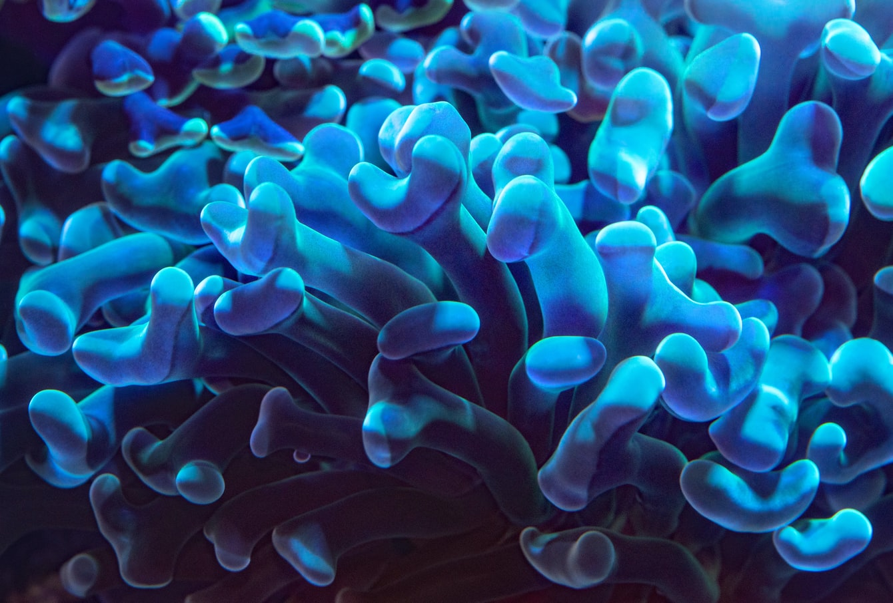
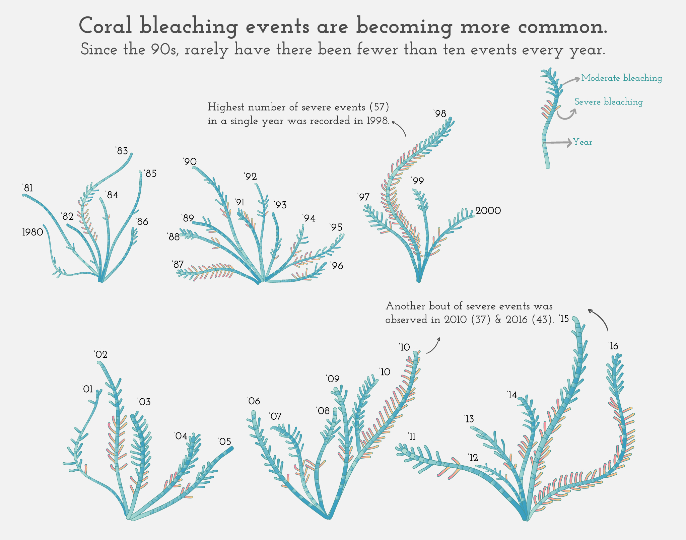
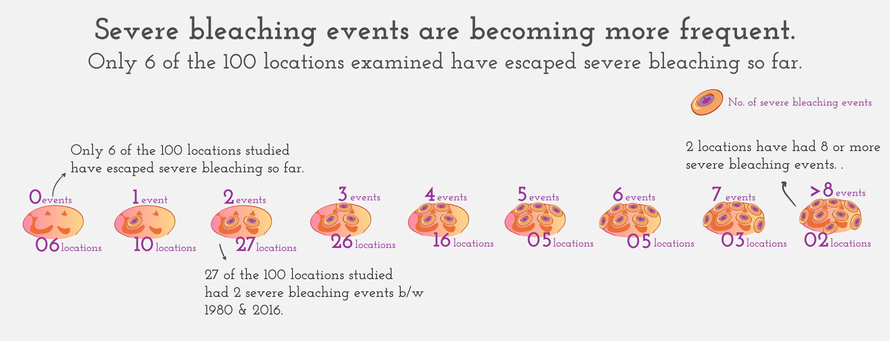
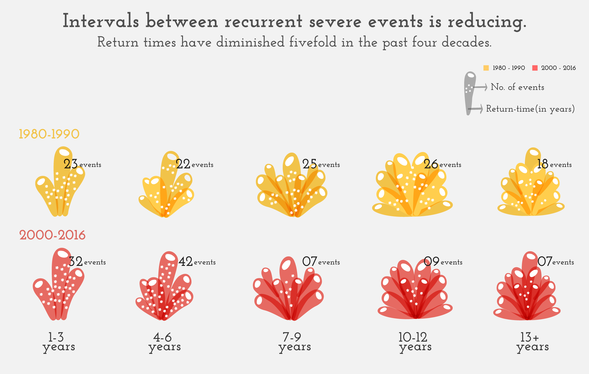

Corals are bleaching faster than they can recover.
Coral bleaching
is becoming more
common
and
severe
, with
reduced intervals
.
Click the underlined phrases to drill down.

Photo by David Clode on Unsplash
Corals are delicate organisms that are sensitive to their surrounding climate.
Rising ocean temperatures — such as caused by global warming — can
put corals under distress. When exposed to warmer waters, corals expel their algal
cover, losing their energy source and turn pale. This phenomenon is known as coral bleaching.
See how bleaching events have changed in the past decade →
Researchers studied bleaching events between 1980 and 2016 in 100 coral reefs across the world.
Bleaching events that affected less than 30% of the corals were classified as moderate, while
the one affecting above 30% corals were classified as severe events.

See how the intensity of bleaching events has changed over time →
As bleaching events become more common and spread across the world, fewer and fewer corals are left untouched.
The rate of severe bleaching annually has increased by a rate of ~4.3%, from covering only 4% of the surveyed locations
in the 1980s to affecting over 17% in 2016.

See how the intervals between bleaching events have changed →

Bottom line: The frequency and intensity of bleaching events is rapidly reaching unsustainable levels. Coral reefs are
facing an era in which the interval between recurrent, severe events has diminished to the point where coral assemblages
do not have sufficient time to recover.